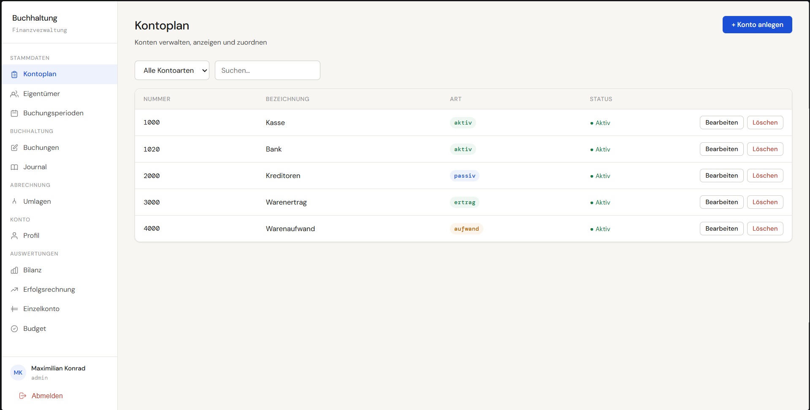
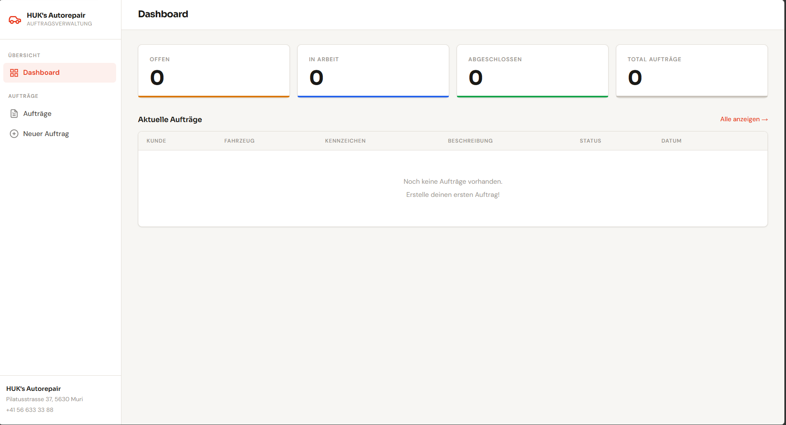
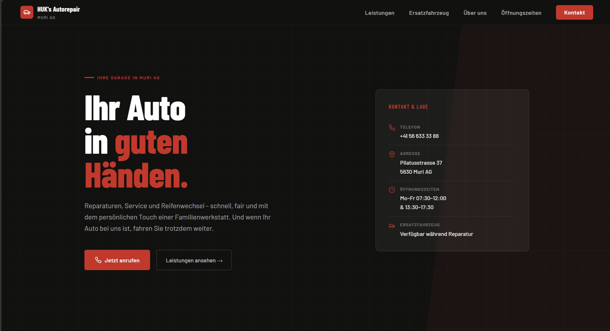

Applikationsentwickler —
Ich denke strukturiert, analysiere präzise und entwickle sauber – vom Datenbankdesign bis zur Benutzeroberfläche. Auf der Suche nach einer IMS-Stelle, bei der ich echten Mehrwert schaffe.
Ich befinde mich in der schulischen Ausbildung zum Applikationsentwickler und bewerbe mich gezielt auf IMS-Stellen. Was mich antreibt: Ich möchte nicht einfach Code schreiben – ich möchte Probleme verstehen und elegante Lösungen bauen.
Mein Fokus liegt auf sauberer Architektur, durchdachtem Datenbankdesign und einer strukturierten Herangehensweise an jede Aufgabe. Neue Technologien eigne ich mir schnell und eigenständig an, ohne den Überblick zu verlieren.
Tech Skills
Stärken
Logisches Denken
Probleme werden systematisch analysiert, Muster erkannt – bevor eine Zeile Code entsteht.
Analytische Problemlösung
Komplexe Aufgaben werden zerlegt, priorisiert und Schritt für Schritt effizient gelöst.
Strukturiertes Entwickeln
Klare Architektur, lesbarer Code und sorgfältige Dokumentation als Selbstverständlichkeit.
Schnelles Einarbeiten
Neue Technologien und Konzepte erschliesse ich mir zügig und eigenständig.
Hover über eine Karte – und erfahre wie ich sie einsetze.
Semantisches Markup, Accessibility-Grundlagen und saubere Dokumentstruktur.
Flexbox, Grid, Custom Properties und Animationen – CSS als Design-Werkzeug.
DOM-Manipulation, Fetch API, Async/Await und LocalStorage.
SELECTs, JOINs, Aggregationen und Subqueries direkt auf der Datenbank.
Schema-Design, Indexe, Row Level Security und Transaktionen.
Auth, Realtime, Storage und RLS-Policies als Backend-as-a-Service.
Branching, Commits, Merging und GitHub-Workflow im täglichen Einsatz.
Repositories, Issues, GitHub Pages und Code-Reviews.
Extensions, Debugging, integriertes Terminal und Git-Integration.
KI-Codeassistenz für Vervollständigung, Refactoring und Erklärungen.
ChatGPT & Co. als Lernbegleiter, Debugging-Partner und Recherche-Tool.
Reale Projekte mit echten Anforderungen – kein Tutorial-Code, sondern durchdachte Lösungen.



Du hast eine passende Stelle oder ein interessantes Projekt? Ich freue mich über jede Nachricht – am liebsten per E-Mail.